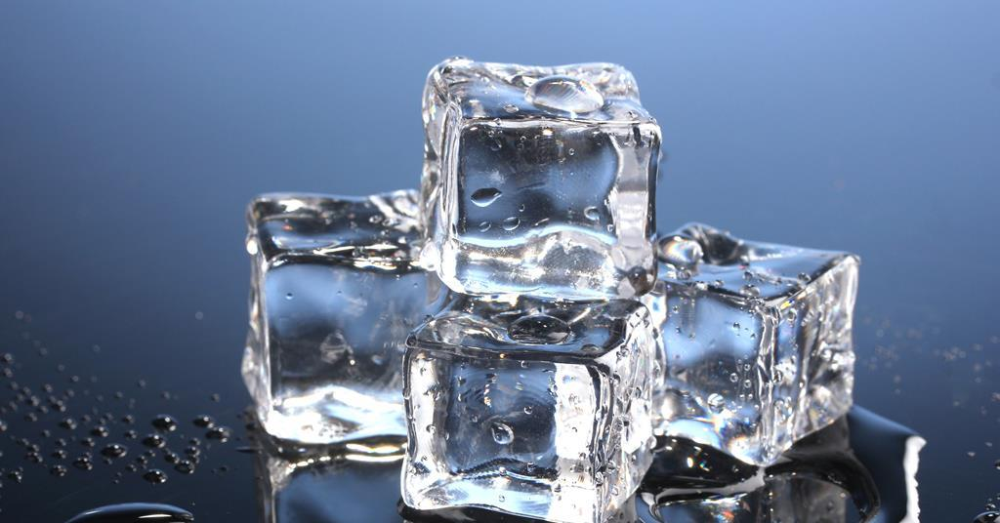

Making ice

Description
What is ice? It's sort of like water, but really cold and quite hard. It may surprise you that it is, in fact, water, and that the coldness and hardness are related.
For the longest time, the only way to get ice was to harvest it from nature, but much to the dismay of ice harvesters, modern technology allows us all to make ice in the comfort of our own homes, using a freezer.
Requirements:
To make ice, you will need three things:
- A freezer. This may be a standalone unit, although more often it's part of the same unit as your refrigerator
- An ice tray. This is a small appliance, generally made of plastic, but sometimes silicon, with indents in. These are generally shaped like cubes, but can come in many different shapes as well
- A source of clean water. If you don't have access to a source of clean water, please immediately seek help
Instructions
- Fill the ice tray with water. It is recommended you do this over a sink, to avoid spillage
- Carefully take the ice tray to the freezer and place it inside, closing the door
- Wait about 6 hours to allow the water to become ice